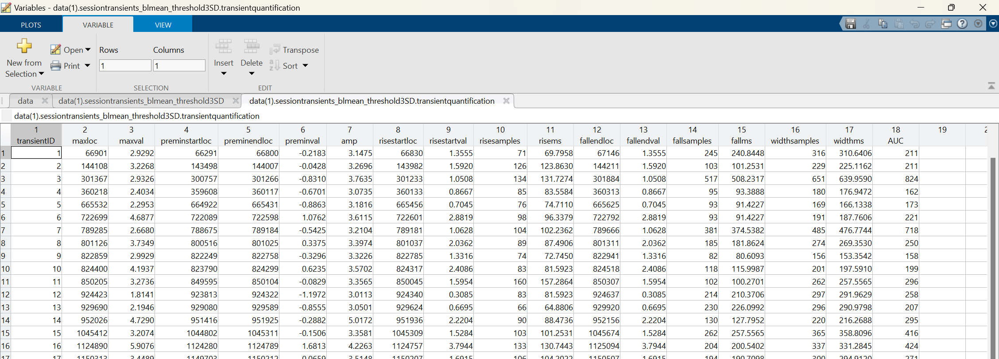

Transient Detection and Quantification
Transient detection is a critical component of fiber photometry analyses, identifying relevant increases in sensor activation. Previous tools and packages have used a sliding window approach, where all values above an absolute threshold are counted as peaks. Here, we present a novel method of peak detection where each peak is compared to a local baseline and amplitude is calculated and compared to a threshold to determine inclusion. This allows for consistent parameters across the session and reliable detection of individual events despite signal absolute value fluctuation.
Transient Event Detection
Transients are detected as peaks with a greater amplitude than the specified threshold. To determine amplitude, first a pre-peak baseline must be identified.
PASTa includes three options: window minimum (minimum value within user defined pre-peak window size, e.g. 800ms), window mean (mean of user defined pre-peak window), or local min (absolute local minimum preceding the peak). The amplitude threshold is set by the user, and recommended to be 3SDs. If data are normalized in Z scores, then the criterion is an increase of 3 from baseline. If not, the user inputs the actual value that corresponds to 3SDs in the data stream.
Prepare Thresholds
Prior to detecting session transients, users must prepare the thresholds to be used for event detection. Transients are detected as peaks with a greater amplitude than the specified threshold. The amplitude threshold is set by the user, and recommended to be 3SDs. If data are normalized in Z scores, then the criterion is an increase of 3 from baseline. If not, the user inputs the actual value that corresponds to 3SDs in the data stream.
Users must add the thresholds to each row of the data structure prior to moving on.
Code example: Preparation of 'threshold3SD' field in data structure containing the value 3 for each row of data. Thresholds are set to the numeric value 3 because transients will be identified in Z scored data streams.
Function: findSessionTransients
Finds transients for the whole session. Pre-transient baselines can be determine as pre-peak baseline window minimum, pre-peak baseline window mean, or local minimum preceding the peak within the baseline window.
NOTE: The findSessionTransients function sets default values for optional input parameters and then calls subfunctions for each type of peak baseline. Note that if you'd prefer to directly call the sub-function desired, all inputs are required and defaults are not specified.
REQUIRED INPUTS:
-
data: This is a structure that contains at least the data stream you want to analyze for transient events.
-
whichbltype: A string specifying the the type of pre-transient baseline to use for transient amplitude determination and inclusion,and event quantification. Default: 'blmin'
- 'blmin': Pre-transient baselines are set to the minimum value within the pre-transient window.
- 'blmean': Pre-transient baselines are set to the mean of the pre-transient window.
- 'localmin': Pre-transient baselines are set to the local minimum directly preceding the transient within the baseline window.
-
whichstream: A string with the name of the field containing the stream to be analyzed for transients. For example, 'sigz_normsession'.
-
whichthreshold: A variable containing a string with the name of the field containing the prepared numeric threshold values for each stream. For example, 'threshold_3SD'.
-
whichfs: A string with the name of the field containing the sampling rate of the streams. For example, 'fs'.
OPTIONAL INPUTS:
-
preminstartms: Number of millseconds pre-transient to use as the start of the baseline window. Default: 1000
-
preminendms: Number of millseconds pre-transient to use as the end of the baseline window. Default: 100
-
posttransientms: Number of millseconds post-transient to use for the post peak baseline and trimmed data output. Default: 2000
-
quantificationheight: The height at which to characterize rise time, fall time, peak width, and AUC. Must be a number between 0 and 1. Default: 0.5
-
outputtransientdata: Set to 1 to output cut data streams for each transient event. Set to 0 to skip. Default: 1
OUTPUTS:
- data: The original data structure with sessiontransients_WHICHBLTYPE_THRESHOLDLABEL added in. The output contains four nested tables:
- inputs: Includes all required and optional function inputs. If optional inputs are not specified, defaults will be applied.
- transientquantification: Includes the quantified variables for each transient, including amplitude, rise time, fall time, width, and AUC. See Transient Quantification section below for addition details on quantification outputs.
- transientstreamlocs: Pre-transient baseline, transient peak, rise, and fall locations for each transient to match the cut transient stream data.
- transientstreamdata: Cut data stream from baseline start to the end of the post-transient period for each transient event.
NOTE: For all data outputs, each transient is in a separate row. If OUTPUTTRANSIENTDATA is set to anything other than 1, the TRANSIENTSTREAMLOCS and TRANSIENTSTREAMDATA tables will be skipped and not included in the output.
Code example: Whole session transient detection with baseline minimum and default inputs.
Code example: Whole session transient detection with baseline mean and shortened pre-peak baseline window.

Code example: Whole session transient detection with local minimum and 25% quantification height.

Transient Event Quantification
Multiple features of transient events can be quantitatively analyzed and compared. Peak detection functions automatically calculate numerous variables for each transient to characterize aspects of both event rise and fall.
-
Frequency: Characterized as peaks per minute. Frequency can be analyzed as whole session frequency, or peaks can be divided into time bins or experimental phases (ITI, during trial, etc).
-
Amplitude: The height of the event from the pre-peak baseline to the max peak. Note that all events will be at least the value of the set threshold (default 3SD).
-
Rise and Fall Time: Transient rise and fall are measured by default from half height to peak and output in samples and ms. This allows for analysis of separate rise and fall dynamic shifts. The quantification height to be measured from can be manually adjusted if desired.
-
Width: Transient width is measured as the width from the pre-peak quantification height (defaults to half height) location to the post-peak quantification height location. This is equivalent to the rise plus the fall.
-
AUC: Total area under the curve from half height to peak, calculated via the trapezoidal method. Prior to AUC calculation, each transient is linearly transformed so pre-peak baseline is equal to zero. If the height to be measured from is adjusted for rise and fall time, it will also be adjusted for AUC.
Figure 6: Transient example with labeled detection parameters and output variables.
After detection and quatification of individual transients, PASTa includes flexible functions to group transients in the most experimentally relevant manner, such as by time window and experimental condition. It may be relevant to identify how the frequency or other features of transients change over the course of the session. One way to determine within session changes is to divide the session into time bins. We typically use 3-5 minute bins, but bin length may vary depending on the treatment, session length, sensor, and region being recorded. See the function binSessionTransients below for more detail on how transients are assigned to bins.
Function Outputs: findSessionTransients
findSessionTransients adds numerous transient quantification values to the data structure for easy output and flexible analysis.
VARIABLES:
-
transientID: Unique integer ID for each transient identified. IDs start at 1.
-
maxloc: Stream index of the maximum transient peak value.
-
maxval: Maximum transient peak value.
-
preminstartloc: Stream index of the start of the pre-peak baseline window.
-
preminendloc: Stream index of the end of the pre-peak baseline window.
-
preminloc: Only included in 'blmin' and 'localmin' outputs. Stream index of the actual pre-peak baseline.
-
preminval: Value of the pre-peak baseline. For 'blmin' and 'localmin', this will be the actual value. For 'blmean', this will be the mean of the baseline window.
-
amp: Amplitude of the transient (maxval - preminval).
-
risestartloc: Stream index of the start of the rise period of the transient, determined by the quantification height. This value is identified as the sample before the peak closest to the preminval + (amp * quantification height).
-
risestartval: Value of the start of the rise period of the transient.
-
risesamples: Length of the transient event rise period in samples. This is calculated as the maxloc - risestartloc.
-
risems: Duration of the transient event rise period in ms.
-
fallendloc: Stream index of the end of the fall period of the transient, determined by the quantification height. This value is identified as the sample after the peak closest to the maxval - (amp * quantification height).
-
fallendval: Value of the end of the fall period of the transient.
-
fallsamples: Length of the transient event fall period in samples. This is calculated as the fallendloc - maxloc.
-
fallms: Duration of the transient event fall period in ms.
-
widthsamples: Total width of the rise and fall of the transient event. Number of samples from the rise start to the fall end locations.
-
widthms: Total duration of the rise and fall of the transient event in ms.
-
AUC: Area under the curve from the quantification height to the transient peak. Calculated via the trapezoidal method.
Output Example - Adding Transients to the Data Structure: Output of findSessionTransients, which is a sub-structure under the field sessiontransients added to the main data structure.
Output Example - Function Inputs: Inputs passed to the findSessionTransients functions are output to the table Inputs within the sessiontransients field of the main data structure.

Output Example - Transient Quantification: Quantification of individual transient events is output to the table transientquantification within the sessiontransients field of the main data structure. Each transient is in a separate row with a unique transient ID. 
Output Example - Individual Transient Trace Indexes: For individual transient traces, transient stream locations of peak and baseline indexes and values are added to the table transientstreamlocs. Each transient is in a separate row.
Output Example - Individual Transient Traces: Actual stream values for individual transient traces, which are cut from the start of the baseline window to the end of the post peak period, and output to the table transientstreamdata. Each transient is in a separate row, and traces are spatially aligned consistently with the transientstreamlocs for easy plotting and analysis.
Function: binSessionTransients
Adds the variable 'Bin' to the transient quantification table and assigns each transient a bin based on it's location within the session. The length for each bin defaults to 5 minutes. By default, the function will calculate the number of bins for each session by dividing the total session length by the length of each bin. Users can manually override this calculation and specify the exact number of bins if desired.
REQUIRED INPUTS:
-
data: his is a structure that contains at least the field containing the stream from which transients were detected, the sampling rate, and the fields containing the transient data with a column of transient max indexes.
-
whichstream: A string with the name of the field containing the data stream input to the findSessionTransients to identify transients from. This is used to determine how many bins are necessary. For example, 'sigz_normsession'
-
whichfs: A string with the name of the field containing the sampling rate of the streams. For example, 'fs'.
-
whichtransients: A string with the name of the parent field containing the table of transients that you want to identify bins for. For example, 'sessiontransients_blmin_3SD'.
OPTIONAL INPUTS:
-
whichtransientstable: The name of the field within WHICHTRANSIENTS that contains the quantification of individual transient events. This input only needs to be specified if not using the format output from the FINDSESSIONTRANSIENTS functions. Default: 'transientquantification'.
-
whichmaxlocs: A string with the name of the field containing the transient max locations (indexes) relative to the whole session. This input only needs to be specified if not using the format output from the FINDSESSIONTRANSIENTS functions. Default: 'maxloc'
-
binlengthmins: Bin length in number of minutes. Default: 5
-
nbinsoverride: Manual override to set the number of bins. If set to anything other than 0, users can override the stream-length based calculation of the number of bins per session and set their own number. Default: 0
OUTPUTS:
- data: This is the original data structure with bins added to the specified table of transients. The bin column will be labeled 'Bin_BINLENGTHMINS'
Code Example: Binning individual transients into 5 minute bins.
Output Example: Individual transients with Bin assignment.Each transient is in a separate row.

Comparison of Transient Events with VTA GCaMP6f, NAcLS dLight1.3b, and NAcLS GRABDA2H
To validate our approach to transient detection, we analyzed identified transient events in dopamine recordings via three sensors: VTA GCaMP6f, NAcLS dLight1.3b, and NAcLS GRABDA2H.
Figure 7: Transient detection and quantification examples for A) GCaMP6f, B) dLight1.3b, and C) GRABDA2H. Transients were detected with a threshold of 3SD and an 800ms window minimum pre-peak baseline. Bar plots of group means by sensor for D) average whole session peak frequency, E) mean peak amplitude, F) total peak rise time from pre-peak baseline to peak, G) rise time from half height to peak, H) fall time from peak to half height, and I) half height AUC. Overall, individual sensor results align well with published kinetics.
Exporting Transient Events
To further analyze changes in transient events, users may want to export the transient quantification results to a csv file to be processed, analyzed, and graphed in other programs such as R Studio. To do so, users can easily generate a csv file with every transient event for all sessions in the data structure.
Function: exportSessionTransients
Creates a table of all transient events for all sessions and saves it to a csv table for easy import to other analysis programs or platforms. Note that this function can also be called to create the table and output to a table in the MATLAB workspace as well.
REQUIRED INPUTS:
-
data: This is a structure that contains at least the output from the function findSessionTransients.
-
whichtransients: The name of the parent field containing the table of transients that you want to export. For example, 'sessiontransients_blmin_3SD'.
-
exportfilepath: Path to the folder location where the created table should be saved to. Note that this path must end in a forward slash or the save function will not work.
-
addvariables: A cell array containing any additional variables from the data structure to be added to the transients table. Variables will be added to every row of the output structure. Cell array inputs must be the names of fields in the data structure. At a minimum, this should contain the subject ID. If multiple sessions per subject are included in the data structure, make sure a session ID variable is also included.
OPTIONAL INPUTS:
- whichtransientstable: The name of the field within WHICHTRANSIENTS that contains the quantification of individual transient events. This input only needs to be specified if not using the format output from the FINDSESSIONTRANSIENTS functions. Default: 'transientquantification'.
OUTPUTS:
-
This function outputs a csv file with all transients for all sessions in the data structure. The file will be output at the specified file path. Variables contained in addvariables will be moved to the first columns of the file for easy identification.
-
OPTIONAL - alltransients: If the function is called into an object, the table ALLTRANSIENTS will also be saved to an object in the MATLAB workspace. If users prefer to analyze group or session means/differences in MATLAB, this option should be used.
NOTE: In the exported csv file and output table, each transient is in a separate row. ID variables such as Subject or Session IDs will be added to the first few columns of every transient row.
Code Example: Exporting all transients for each session into one table with added ID variables for Subject, Treatment Number, and Injection Type.